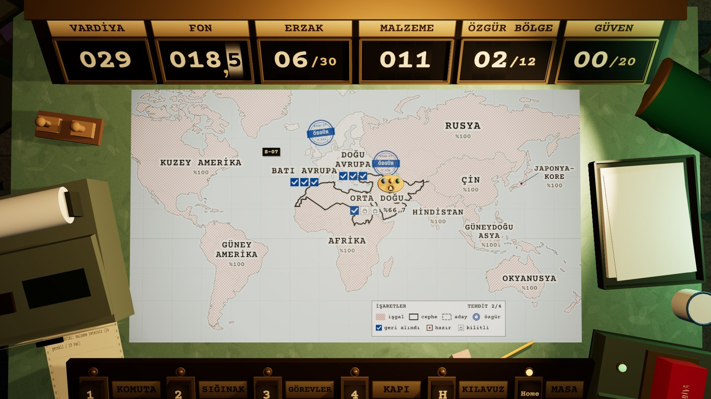

KYGA · HAREKÂT SONU RAPORU
SIĞINAK 07 · V.029 · tek nüsha
KAYBEDİLDİ
DAĞILMA
Sivil güven sıfıra indi; Sığınak 07 dağıldı.
Son vardiyada güven 1'den 0'a düştü. Dağılma, harekâtı bitiren üç sonuçtan biri.
SÜRE
29
vardiya
BASKIN
13
9 başarılı · 4 başarısız
ÖZGÜR BÖLGE
2/12
7/36 sektör geri alındı
SIĞINAK NÜFUSU
3
kişi kaldı
İŞGAL ORANI
VARDİYA 1–29
%100
%50
%0
1
5
10
15
20
25
29
İŞGAL · %81
GERİ ALINAN
1
2
3
4
5
KIRILMA ANLARI
1
V.011
Batı Avrupa özgür, ilk bölge
2
V.018
Doğu Avrupa özgür
3
V.022
YZ karşı saldırısı: Orta Doğu 01 yeniden işgal
4
V.026
Kapıda “İlaç yok” dendi · güven −1
5
V.029
Güven 0 · sığınak dağıldı
Enter
YENİDEN BAŞLA